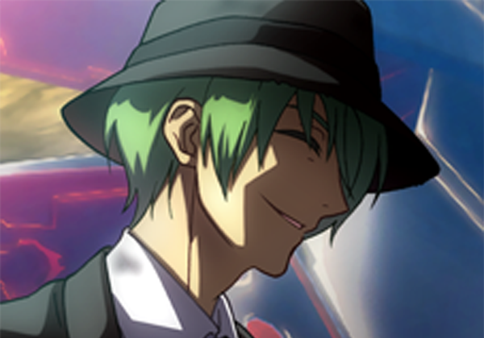

Archimedes Johannson
| Archimedes Johannson | ||
|---|---|---|
|  | ||
| Statistics | ||
| Name: | Archimedes Johannson | |
| Debut: | Session 1 | |
| Affiliations: |
Briss Pirates (Former) New Game Pirates |
|
| Occupations: | Pirate; Navigator | |
| Origin: | South Blue | |
| Residence: | Briss Kingdom (Former) | |
| Alias: | Archie | |
| Epithet: | Sharpshooter | |
| Status: | Alive | |
| Age: | 25 | |
| Birthday: | July 4th (American Independence Day) | |
| Height | 173 cm (5'8") | |
| Blood Type: | X | |
| Bounty: | $23,000,000 | |
| Devil Fruit | ||
| Japanese Name: | Nagi Nagi no Mi | |
| English Name: | Calm Calm Fruit | |
| Meaning: | Calm | |
| Type: | Paramecia | |
| Stats | ||
| Level: | 9 | |
| HP | Str | Int |
| 65 | 8 | 14 |
| AC | Dex | Wis |
| 17 | 20 | 14 |
| DC | Con | Cha |
| 17 | 11 | 12 |
Archimedes, is a Human Rogue and a member of New Game Pirates. They are played by Jonathan.
Description
Appearance
Archie had naturally blond hair, which he dyes a bright green in memory of his old captain who had naturally green hair and blue eyes, which he hides with golden contacts lenses. He prefers to wear a black and white three piece suit, with a vest instead of a jacket, with a longer coat over it. He also wears a black fedora with the rest of his outfit.
Personality
Archie is a cautions and patient individual who prefers to stay in the back during fights, and can come off as being callous to others. He enjoys spending time talking with interesting people, and listening to his crew. He holds great loyalty to his current and former crews, he held a great deal of Respect for his old captains, Maxwell and Keek Frip. He is very loyal to his current Captain, Chad. Archie has respect for people who think for themselves and dislikes it when people follow orders they disagree with without questioning them.
Archie can come off as callous to people who don't know him, as he doesn't have a problem with killing anyone who fights against his crew.
Biography
Background
Archie was born in the Briss Kingdom, where he lived until he was Sixteen. When he was Sixteen, he moved to the West Blue to study at the Naval Academy until he met his first captain, Maxwell, and joined him in being a pirate.
When Archie was twenty-one, the crew made their first attempt to enter the grand line, where they were beaten down by a marine captain, however they managed to escape with no casualties.
When Archie was twenty-four, his crew attempted to raid a Marine Base, hoping to take revenge on the Marine Captain. However, they failed and the Captain who origionally defeated them had been promotted to Commodore and he destroyed Archies old crew, as well as captured Maxwell and the Navigator.
West Blue Saga
Cresent Moon Arc
Archie was recruited to what would become the New Game Pirates in the City of Pantherport on Cresent Moon Island. They at first looked for ships in the city, but could only find fishing boats, so they attempted to leave and go to Rivermouth. On the way, they were attacked by panthers, and after defeating them, they were asked by the Mayor to deal with them for pay.
Archie hid in the tree's while the crew found and confronted the Pantherman, and Archie nearly shot the Pantherman, but allowed the captain, Keek Frip to negotiate. They crew brought him back to Pantherport, where Pantherman was arrested, and the crew fled after accidentaly starting a war. Outside of town, they met a child, who they would later learn was Isaac, the Second Prince of the Island. Isaac payed them 500,000 for let him pal around with them.
The crew arrived in Rivermouth, and Archie joined Chad and Keek Frip in heading to the docks to find a ship. They eventually found one, the Whispered Vesper, which they arranged to buy for $4,000,000 beli. Afterwords, the three went to the Tavern to meet back up with Suresh and Sanjo. At the Tavern, Archie attempted to steal Suresh's vodka, but failed. They crew met a Marine who hired them to look into Long Jack.
The Crew headed into the Jungle, where Archie successfuly led them past the initial guards, until Suresh sneezed, and alerted a diffrent group of guards. Keek and Suresh were knocked unconsious, while Chad, Sanjo and Isaac were captured. Archie avoided capture by hiding in a tree. The crew would later meet with Long Jack, and agree to steal back a treasure he had sold to the royal family.
The Crew was released, and they informed the Marines of Long Jack for the money. They then broke into the castle with the help of the Prince, and with his knowledge, they told the treasure, which turned out to be a Devil Fruit. The Crew would use the Box and their accumulated funds to buy a boat and leave.
Coliseum Games Arc
After two weeks of Travel, the crew arrived on Coliseum Island, fleeing from Long Jack after breaking their deal with him. They agreed to participate in Coliseum Challenges to make back some money, as theirs was depleated. During their second Challenge, Archie accidentaly killed a man by shooting him in the head. In their third challenge, Keek and Chad were knocked out.
After making it to the middle class challenges, the crew went to look for the devil fruit encyclopedia, and found a man who had consumed the Nightmare Devil Fruit. After braving their fears, they met with him, and gave him ideas on how to train and control his powers, and in exchange, got the book, where they identified the Devil Fruit they possessed, the Nagi Nagi no Mi, or the Calm Calm Fruit. Archie would be given the Fruit, as it suited his fighting style the best.
During their time on the Coliseum island, they would also meet another competitor, who seemed to possess a skill based Devil Fruit, as she gave Archie the ability to Juggle. After making it to High Class, the crew visited a store, where Archie bought a Wazamono-Grade Rapier, named the Kaiyonami, and upgraded his Armor.
Two weeks after arriving on the island, the island was attacked by Long Jack. As the crew fled they were faced with the Gunsmith who had ratted them out to Long Jack the first time, and the crew defeated him and the group of pirates he was leading. After defeating him, Archie shot him in the head while the rest of the crew, and took his custom double-shot rifle. The crew would flee the Island.
Undermountain Arc
Archie would lead the Crew away from Coliseum Island, and they would eventually arrive on an uncharted island, where they would get dragged down by a whirl pool. While Archie managed to stay on the ship, Keek and Sanjo were knocked off. Eventually, the remaining crew found a small town, and Archie decided to stay back while Chad and Suresh explored the town.
After signing up with a mining crew, Chad and Suresh got Archie, so they could look for Keek and Sanjo. The three decided to ignore they job they had signed up for, and hunted them down by themselves. After being attacked by Spiders, they found a train, which eventually lead them to a smaller mining outpost they had visited.
Chad and Suresh were found by Steve the Miner they had signed up with, who led them to Keek and Sanjo. After the crew united, they met the Vibing Pirates who had allied with Keek and Sanjo in the underground forest. The Crew would agree to take Steve and fifty others to the surface, in exchange for their help in leaving the underground.
While preparing to leave, Archie was in charge of getting food, so he robbed a bakery, and to cause a distraction, lit a match and tossed it in to blow it up. He would arrive back at the ship and load his bread aboard while Keek and Suresh returned with the dingy that had been stolen from them by the fishermen. The crew would scout out the tunnels before returning to pick up Steve and his Group.
While picking up Steve and his Group, Archie would Man the Cannons, and shoot groups of soldiers who tried to prevent Steve's group from leaving. After Steve's Group was on the ship Archie navigated the ship away from the city, and towards the elevator, which they would use to escape.
After arriving at the surface, the crew would part with the Vibing Pirates and Steve's Miners who started to build a new town on the uninhabited island. As they were leaving, they decided to head to the Grand Line, and they learned that Long Jack was preventing all pirate crews from heading to the Grand Line until they were caught and brought to him.
Scraptrap Arc
As the crew headed towards Scraptrap, the island closes to Reverse Mountain, to get a Log Pose and a Den Den Mushi. They were attacked by two sea kings, and the crew killed them without much difficulty.
As they arrived on the island, they payed there way onto the island, and they headed to a bar where they learned that Log Poses were being restricted. The Crew met the Marine Captain, Captain Who, who had memory problems. After Chad and Suresh left the bar, Archie, Keek and Sanjo went to purchase a Den Den Mushi, and they bought two.
After meeting back up with Suresh, they went to look for Chad, and Sanjo was recognized. After some quick talking by Suresh, the Marines left Sanjo alone, and Archie begged Sanjo to be more discrete. After a few hours, they got a lead on Chad's location, and followed a tunnel to his location.
One the crew arrived, Archie tried to scout, but Sanjo jumped the fence into an ambush. Archie took out the snipers, and the crew was wounded. Sanjo then charged into the Factory, and Archie hid in the back to provide supporting cover. Eventually, Keek and Sanjo both went down, and Suresh was heavily injured, so Archie broke his cover to draw fire from the Snipers so Suresh wouldn't get targeted. This worked, and after the second group was defeated, Sanjo was woken up, but Keek was found to be dead. Archie called for a retreat, with Suresh picking up Keek's body, and Archie blowing up the factory.
While running away, they found Umioga the Musician, who helped them evade capture. After an hour, they found Chad Man, and held an impromtu vote to make him the new Captain. Archie tried to trick the Marine Captain into giving them passage, but was called out for being a pirate. The Marines attacked the New Game Pirates, which ended in Chad Man getting knocked unconsious, but Archie defeated Captain Who and killed his Lieutenant.
The crew managed to escape the Island and had a viking funeral for their old Captain. The crew explained their adventures to their new Musician, Umioga and learned his story. Archie gave Chad Man his sword, Kaiyonami, and the sword he took form the Lieutenant.
Reverse Mountain Arc
While the rest of the crew fought against Jack, Archie and Umioga controlled the ship to fight against the two secondary ships of Jack's fleet, while the rest of the Party fought their way through the Jack Pirates main ship towards the captain.
Once the Secondary ships were down, Archie and Umioga joined the rest of the crew in fighting against the Giant Jack. After Jack was defeated, Archie helped loot the ship, before leading the crew up reverse Mountain.
Paradise Saga
Parkland Arc
Archie led the crew towards Parkland at the request of the rest of the crew after meeting with Kermit and his crew. After the events of the Carnival, Archie snuck around and learned about the true purpose of the Carnival and informed the rest of his crew.
The next day, Archie led the rest of the crew in assaulting the main base of the bounty hunters on the island. Archie was nearly killed by the leader of the bounty hunters before the curse curse fruit user was killed. After the bounty hunters were defeated, Archie annouced the truth to the rest of the pirates before leaving.
Perimus Arc
Archie watched as the crew agreed to help in finding the missing crew members of a local woman who were lost in the sunken castle. Archie led the crew through the storm towards the sunken castle of Perimus, and helped in getting the crew into the castle.
Archie joined the rest of the crew in traveling up the castle and rescuing the members of the womans crew. Archie tried and failed to convince Starchild to join the crew before heading up the castle.
Archie was the one to turn off the storm once in the beacon control room.
Alabasta Arc
Archie pulled the ship into Nanohana, and found a Poster and a Newspaper. After reading both, the crew decided to go to the bridge to attempt to collect the bounty on the bandits occupying the bridge. During the fighting, Umioga and Suresh were knocked unconsious. After the battle, Chad retired from being a pirate.
When the crew learned their ship had been impounded, at Alubarna, Archie voted to head there, rather than towards the carnival, but was outvoted. On the way to the carnival, the crew was attacked by a large purple worm. Once the worm was dead, Archie harvested it's poison. During the Rainbase Carnival, Archie helped take care of the T-Rex while the ape escaped, and saw Sir Crocodile kill the ape.
Relationships
Person
Describe Relationships
Character Information
Notable Items
Notable Items the character possesses
Former Items
Notable Items the character used to possess